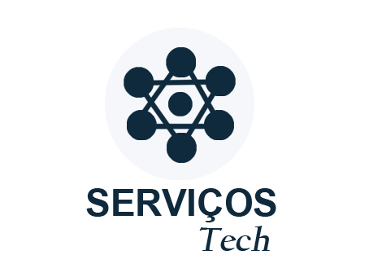

Site
profissional
para sua empresa
Transforme sua presença online e
conquiste mais clientes
Site institucional
Até 5 páginas
Design moderno e responsivo
Painel administrativo incluso
Hospedagem e suporte a combinar
A partir de
R$990
Chame no WhatsApp